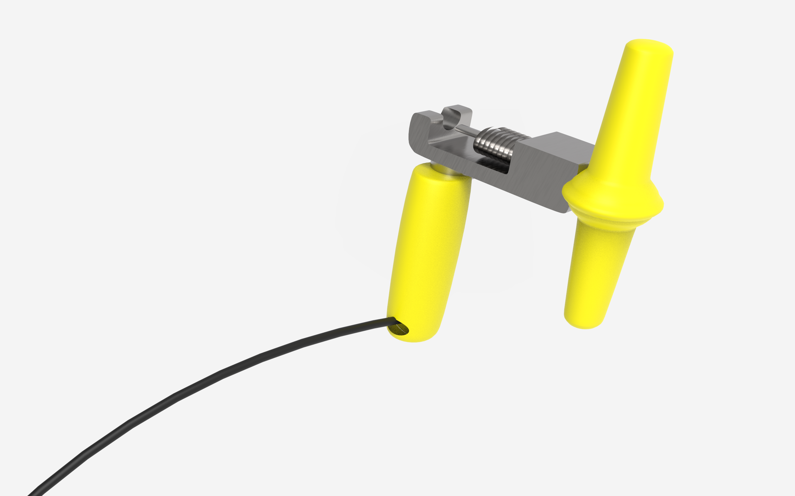
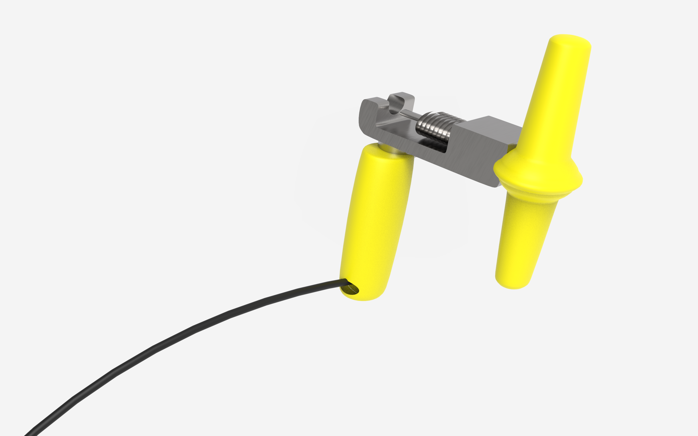

Repair & Go
Repair & Go is a set of two solutions intended to promote using personal bicycled in Paris, using the existing Velib’ ecosystem.
Date
2020
My role
Service
Product design
Duration
3 months
Team size
4 members

Implementing the service into the existing Velib’ ecosystem of shared bikes allows a greater visibility.
view in AR Android east
view in AR iOS east
Repairing the existing
Anyone biking in the city can easily repair their bike
Taking advantage of the Velib’ sharing bike stations allows anyone to not be scared of having issues while biking.
When interviewing the citizens on why they didn’t bike to work, a lot were concerned about arriving late due to a problem with the bike, such as having a flat tire, or the brakes not being tight enough.
The bicycled can be held on the bars to make the repairs easier.
Each tool is attached by a cable to ensure nothing is stolen.
 

Incentivizing
Understanding the use
On the back of the repair station is the explanation about how to use the different elements.
A QR code is here to help people with their various repairs, leading to a website with video tutorials.
Users can buy gloves and tire patches directly from the repair station.
Sides
Pump & Trailer hook
The sides of the bike station have the bike pump and the bike trailer hook.
Storing
Carrying weight
Another important reason why people prefer cars to bikes, was the possibility of carrying weight, such as groceries, random items or children.
For that reason, we decided to create a bike trailer compatible with all Velib’ bikes. Most of them being electric, the weight would not be a issue.
Rain
The trailer has a cover to suit any weather
The cover is usually stored inside, and can be easily attached on top if needed.
It folds into a small seat to easily carry children. Carry straps can be attached in the back to be used as seat belts.